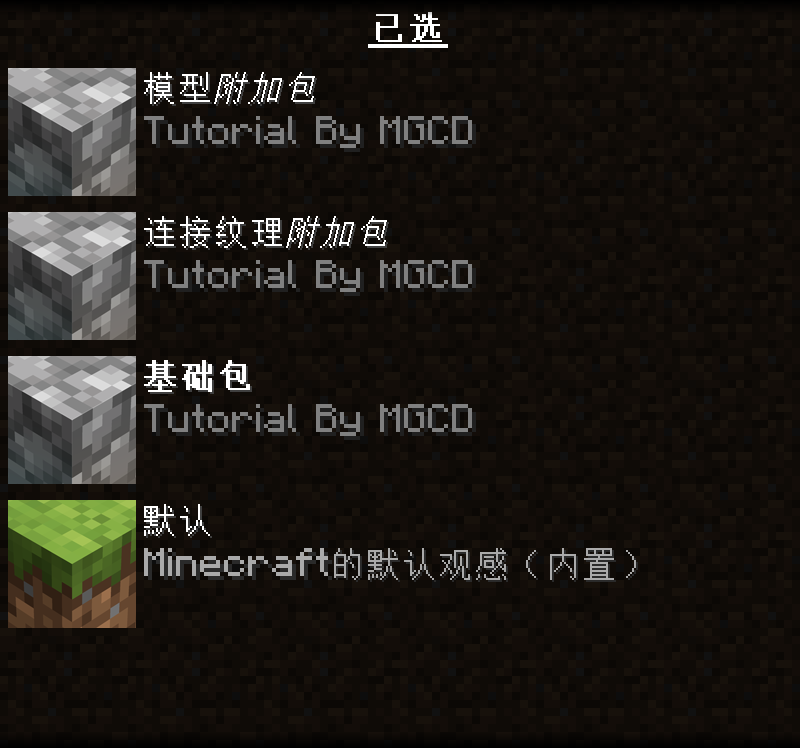

资源包安装通用教程
准备工作
使用资源包之前你需要先进行以下准备
如果你所使用的资源包支持 OptiFine 特性，那么你需要确保你已经 正确安装 OptiFine。
如果你使用 Iris 进行游玩，你可以查看 这篇文档 来安装支持对应特性的模组。
如果你所使用的资源包有模组扩展，你需要正确安装 Forge 或 Fabric 。
检查资源包
检查你的资源包是否符合下列要求：
打开压缩包或文件夹后应该至少有名为
assets的文件夹和pack.mcmeta的文件 ，同时大多数资源包还有pack.png的封面。└─ resourcepacks └─ <资源包名称 | 资源包名称.zip> # 仅支持未加密的 .zip 压缩包 ├─ assets # 重要！ │ └─ <资源包相关文件和文件夹> ├─ pack.mcmeta # 重要！资源包版本号和描述 └─ pack.png # 资源包封面确保不是 Canvas 光影包，否则你应当安装 Canvas。
安装资源包
点击
选项>资源包将包直接拖入该页面。
将
可用资源包置于已选。点击完成 ，在老版本中使用 Esc 返回上一页可能导致直接取消资源包更改。

点击
选项>资源包>打开包文件夹将包拖入该文件夹。
将
可用资源包置于已选。点击完成 ，在老版本中使用 Esc 返回上一页可能导致直接取消资源包更改。

使用时的注意事项
确保你知晓 所用资源包所对应的游戏版本 ，即使游戏提示
适用于<新 | 旧>版本的Minecraft也可以忽略。确保你正确安装了有多个分包的资源包，资源包自上而下加载，你应该将附属包置于基础包上部。
 一些资源包可能不支持从压缩包状态加载，你需要解压缩它们，同时也要注意 先前提到的问题。
Last modified: 24 July 2024